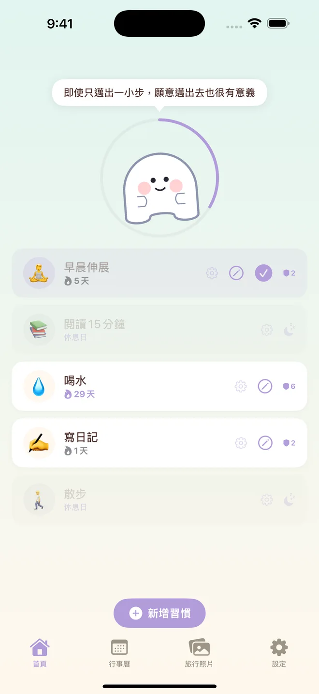
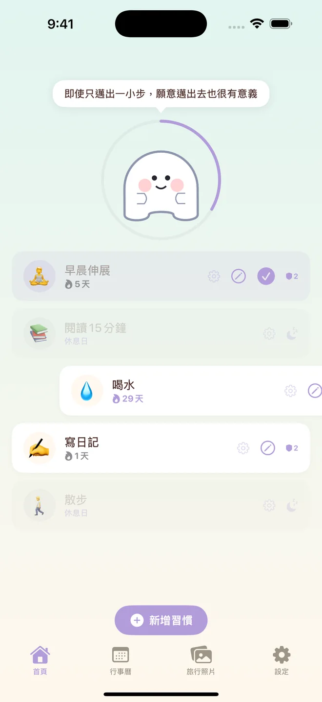
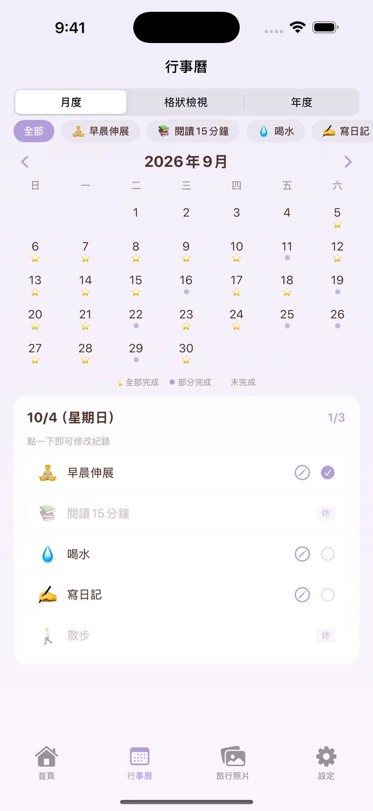

Marutto覺得今天運氣特別好！雖然沒有任何根據！
愛聊天的小夥伴，讓習慣多一點樂趣。
讓每天的習慣，
變成一場冒險。
完成當天所有習慣，收穫一張旅行照片。
和為你加油的 Marutto 一起，探索250種旅行回憶。
每一個「做到了」，都讓明天更值得期待。
支援 iPhone、iPad / 免費，含廣告 / 無須註冊
認識 Marutto
250種旅行照片等你收集

Marutto覺得今天運氣特別好！雖然沒有任何根據！
250種旅行照片等你探索
✓輕輕一滑，記錄成就
FREE免費，無須註冊
MEET YOUR CHATTY LITTLE COMPANION
愛聊天的小夥伴，
每天都想見一面。
誇誇你，鼓勵你，偶爾說點讓你忍不住笑的話。習慣小精靈 Marutto 陪著你的每一小步。今天又會聊些什麼呢？
哇！你完成了閱讀！Marutto好感動！
休息不是壞事。Marutto保證！
雲朵戴在富士山頂上，看得我也想要一頂帽子了
輕點一個情境，看看 Marutto 會說什麼。
以下為 App 內的部分台詞示例。
每次見面，都有一句問候。
隨著時間和季節變化的問候，偶爾冒出一句讓你會心一笑的小感想。
小小的成就，一起開心。
每一份努力，都有 Marutto 為你加油，讓下一小步也值得期待。
休息的時候，也站在你這邊。
不如意的日子裡，有溫柔的鼓勵。跟著自己的步調，再次出發。
01 — LITTLE BY LITTLE
每一個小進步，
都值得開心。
伸個懶腰、讀一頁書、喝一杯水。從一件小事開始，讓 Marutto 陪你度過每一天。
01

A SMALL STEP FORWARD
完成囉！
輕輕一滑就記好。
滑動習慣卡片，標記為完成。你也可以取消完成狀態，或透過行事曆修改過去的紀錄。
輕點一下，體驗小小的成就
網站示範
無論是努力的一天，還是不太順利的一天，Marutto都會為你加油。
02

02 — A WORLD OF LITTLE REWARDS
從平凡的日常，
走向更大的世界。
250✦
種旅行照片等你收集


持續習慣，收集旅行回憶。
完成當天所有習慣，就能獲得1張旅行照片。探索250種照片，閱讀Marutto的旅行日記和小知識。也可以觀看獎勵影片廣告，領取額外照片。
分享照片和旅行日記
放大喜歡的照片，點一下分享按鈕即可分享照片和日記，還會附上 App 連結與 #MaruttoTracker。
03 — AT YOUR OWN PACE
適合你的生活，才能輕鬆持續。
配合你的生活步調
可以設定執行習慣的星期、提醒以及每日分界時間。透過主畫面小工具也能查看今天的完成情況。
用護盾守護連續紀錄
連續堅持7天即可獲得護盾。偶爾忘記時，護盾可以保護連續紀錄。你可以在設定中開啟或關閉這項功能。
支援18種語言和地區設定
從介面、Marutto的台詞到旅行日記，都可以用喜歡的語言閱讀。
可以免費使用嗎？
可以免費下載和使用。App 內含廣告，也可以自願觀看影片廣告，領取額外的旅行照片。
需要註冊帳號嗎？
無須註冊帳號。習慣紀錄儲存在你的裝置上。支援執行 iOS 17 或更新版本的 iPhone 和 iPad。